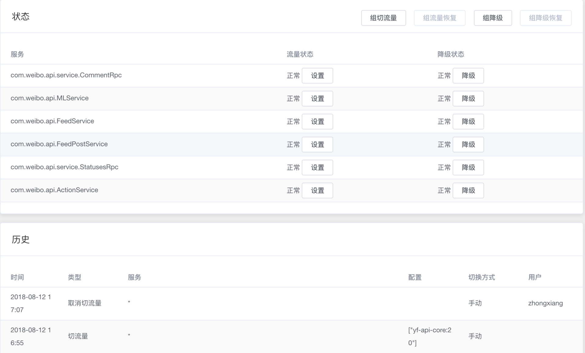

- 00 开篇词 微服务，从放弃到入门.md.html
- 01 到底什么是微服务？.md.html
- 02 从单体应用走向服务化.md.html
- 03 初探微服务架构.md.html
- 04 如何发布和引用服务？.md.html
- 05 如何注册和发现服务？.md.html
- 06 如何实现RPC远程服务调用？.md.html
- 07 如何监控微服务调用？.md.html
- 08 如何追踪微服务调用？.md.html
- 09 微服务治理的手段有哪些？.md.html
- 10 Dubbo框架里的微服务组件.md.html
- 11 服务发布和引用的实践.md.html
- 12 如何将注册中心落地？.md.html
- 13 开源服务注册中心如何选型？.md.html
- 14 开源RPC框架如何选型？.md.html
- 15 如何搭建一个可靠的监控系统？.md.html
- 16 如何搭建一套适合你的服务追踪系统？.md.html
- 17 如何识别服务节点是否存活？.md.html
- 18 如何使用负载均衡算法？.md.html
- 19 如何使用服务路由？.md.html
- 20 服务端出现故障时该如何应对？.md.html
- 21 服务调用失败时有哪些处理手段？.md.html
- 22 如何管理服务配置？.md.html
- 23 如何搭建微服务治理平台？.md.html
- 24 微服务架构该如何落地？.md.html
- 25 微服务为什么要容器化？.md.html
- 26 微服务容器化运维：镜像仓库和资源调度.md.html
- 27 微服务容器化运维：容器调度和服务编排.md.html
- 28 微服务容器化运维：微博容器运维平台DCP.md.html
- 29 微服务如何实现DevOps？.md.html
- 30 如何做好微服务容量规划？.md.html
- 31 微服务多机房部署实践.md.html
- 32 微服务混合云部署实践.md.html
- 33 下一代微服务架构Service Mesh.md.html
- 34 Istio：Service Mesh的代表产品.md.html
- 35 微博Service Mesh实践之路（上）.md.html
- 36 微博Service Mesh实践之路（下）.md.html
- 微博技术解密（上） 微博信息流是如何实现的？.md.html
- 微博技术解密（下）微博存储的那些事儿.md.html
- 结束语 微服务，从入门到精通.md.html
- 阿忠伯的特别放送 答疑解惑01.md.html
- 阿忠伯的特别放送 答疑解惑02.md.html
- 捐赠
23 如何搭建微服务治理平台？
在学习今天的内容前，我们先来回顾下[专栏第9期]。我给你讲过单体应用改造为微服务架构后，服务调用从本地调用变成了远程方法调用后，面临的各种不确定因素变多了，一方面你需要能够监控各个服务的实时运行状态、服务调用的链路和拓扑图；另一方面你需要在出现故障时，能够快速定位故障的原因并可以通过诸如降级、限流、切流量、扩容等手段快速干预止损。这个时候就需要我今天要讲的微服务治理平台了。
那么微服务治理平台都具备哪些功能呢，具体该如何搭建一套微服务治理平台呢？
微服务治理平台的基本功能
你可能先会问，到底什么是微服务治理平台？根据我的理解，微服务治理平台就是与服务打交道的统一入口，无论是开发人员还是运维人员，都能通过这个平台对服务进行各种操作，比如开发人员可以通过这个平台对服务进行降级操作，运维人员可以通过这个平台对服务进行上下线操作，而不需要关心这个操作背后的具体实现。
接下来我就结合下面这张图，给你介绍一下一个微服务治理平台应该具备哪些基本功能。
1. 服务管理
通过微服务治理平台，可以调用注册中心提供的各种管理接口来实现服务的管理。根据我的经验，服务管理一般包括以下几种操作：
服务上下线。当上线一个新服务的时候，可以通过调用注册中心的服务添加接口，新添加一个服务，同样要下线一个已有服务的时候，也可以通过调用注册中心的服务注销接口，删除一个服务。
节点添加/删除。当需要给服务新添加节点时候，可以通过调用注册中心的节点注册接口，来给服务新增加一个节点。而当有故障节点出现或者想临时下线一些节点时，可以通过调用注册中心的节点反注册接口，来删除节点。
服务查询。这个操作会调用注册中心的服务查询接口，可以查询当前注册中心里共注册了多少个服务，每个服务的详细信息。
服务节点查询。这个操作会调用注册中心的节点查询接口，来查询某个服务下一共有多少个节点。
2. 服务治理
通过微服务治理平台，可以调用配置中心提供的接口，动态地修改各种配置来实现服务的治理。根据我的经验，常用的服务治理手段包括以下几种：
限流。一般是在系统出现故障的时候，比如像微博因为热点突发事件的发生，可能会在短时间内流量翻几倍，超出系统的最大容量。这个时候就需要调用配置中心的接口，去修改非核心服务的限流阈值，从而减少非核心服务的调用，给核心服务留出充足的冗余度。
降级。跟限流一样，降级也是系统出现故障时的应对方案。要么是因为突发流量的到来，导致系统的容量不足，这时可以通过降级一些非核心业务，来增加系统的冗余度；要么是因为某些依赖服务的问题，导致系统被拖慢，这时可以降级对依赖服务的调用，避免被拖死。
切流量。通常为了服务的异地容灾考虑，服务部署在不止一个IDC内。当某个IDC因为电缆被挖断、机房断电等不可抗力时，需要把故障IDC的流量切换到其他正常IDC，这时候可以调用配置中心的接口，向所有订阅了故障IDC服务的消费者下发指令，将流量统统切换到其他正常IDC，从而避免服务消费者受影响。
3. 服务监控
微服务治理平台一般包括两个层面的监控。一个是整体监控，比如服务依赖拓扑图，将整个系统内服务间的调用关系和依赖关系进行可视化的展示；一个是具体服务监控，比如服务的QPS、AvgTime、P999等监控指标。其中整体监控可以使用服务追踪系统提供的服务依赖拓扑图，而具体服务监控则可以通过Grafana等监控系统UI来展示。
4. 问题定位
微服务治理平台实现问题定位，可以从两个方面来进行。一个是宏观层面，即通过服务监控来发觉异常，比如某个服务的平均耗时异常导致调用失败；一个是微观层面，即通过服务追踪来具体定位一次用户请求失败具体是因为服务调用全链路的哪一层导致的。
5. 日志查询
微服务治理平台可以通过接入类似ELK的日志系统，能够实时地查询某个用户的请求的详细信息或者某一类用户请求的数据统计。
6. 服务运维
微服务治理平台可以调用容器管理平台，来实现常见的运维操作。根据我的经验，服务运维主要包括下面几种操作：
发布部署。当服务有功能变更，需要重新发布部署的时候，可以调用容器管理平台分批按比例进行重新部署，然后发布到线上。
扩缩容。在流量增加或者减少的时候，需要相应地增加或者缩减服务在线上部署的实例，这时候可以调用容器管理平台来扩容或者缩容。
如何搭建微服务治理平台
微服务治理平台之所以能够实现上面所说的功能，关键之处就在于它能够封装对微服务架构内的各个基础设施组件的调用，从而对外提供统一的服务操作API，而且还提供了可视化的界面，以方便开发人员和运维人员操作。
根据我的经验，一个微服务治理平台的组成主要包括三部分：Web Portal层、API层以及数据存储DB层，结合下面这张图我来详细讲解下每一层该如何实现。
第一层：Web Portal。也就是微服务治理平台的前端展示层，一般包含以下几个功能界面：
- 服务管理界面，可以进行节点的操作，比如查询节点、删除节点。
- 服务治理界面，可以进行服务治理操作，比如切流量、降级等，还可以查看操作记录。

- 服务监控界面，可以查看服务的详细信息，比如QPS、AvgTime、耗时分布区间以及P999等。
- 服务运维界面，可以执行服务的扩缩容操作，还可以查看扩缩容的操作历史。
第二层，API。也就是微服务治理平台的后端服务层，这一层对应的需要提供Web Portal接口以调用，对应的一般包含下面几个接口功能：
添加服务接口。这个接口会调用注册中心提供的服务添加接口来新发布一个服务。
删除服务接口。这个接口会调用注册中心提供的服务注销接口来下线一个服务。
服务降级/限流/切流量接口。这几个接口会调用配置中心提供的配置修改接口，来修改对应服务的配置，然后订阅这个服务的消费者就会从配置中心拉取最新的配置，从而实现降级、限流以及流量切换。
服务扩缩容接口。这个接口会调用容器平台提供的扩缩容接口，来实现服务的实例添加和删除。
服务部署接口。这个接口会调用容器平台提供的上线部署接口，来实现服务的线上部署。
第三层，DB。也就是微服务治理平台的数据存储层，因为微服务治理平台不仅需要调用其他组件提供的接口，还需要存储一些基本信息，主要分为以下几种：
用户权限。因为微服务治理平台的功能十分强大，所以要对用户的权限进行管理。一般可以分为可浏览、可更改以及管理员三个权限。而且还需要对可更改的权限进行细分，按照不同服务的负责人进行权限划分，一个人只能对它负责的服务的进行更改操作，而不能修改其他人负责的服务。
操作记录。用来记录下用户在平台上所进行的变更操作，比如降级记录、扩缩容记录、切流量记录等。
元数据。主要是用来把服务在各个系统中对应的记录映射到微服务治理平台中，统一进行管理。比如某个服务在监控系统里可能有个特殊标识，在注册中心里又使用了另外一个标识，为了统一就需要在微服务治理平台统一进行转换，然后进行数据串联。
总结
可以说一个微服务框架是否成熟，除了要看它是否具备服务治理能力，还要看是否有强大的微服务治理平台。因为微服务治理平台能够将多个系统整合在一起，无论是对开发还是运维来说，都能起到事半功倍的作用，这也是当前大部分开源微服务框架所欠缺的部分，所以对于大部分团队来说，都需要自己搭建微服务治理平台。不过好在微服务治理平台本身的架构并不复杂，你可以根据自己的实际需要，来决定微服务治理平台具备哪些功能。
思考题
除了我上面列举的一些功能以外，你觉得微服务治理平台还可以包含哪些功能？说说你的理由。
欢迎你在留言区写下自己的思考，与我一起讨论。
© 2019 - 2023 Liangliang Lee. Powered by gin and hexo-theme-book.